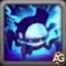
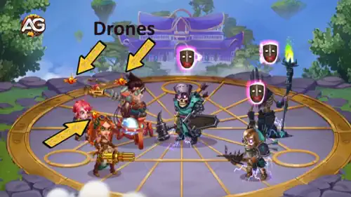
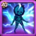
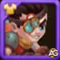
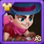
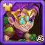
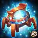

Isaac is not just another hero; he’s the genius engineer who makes mages tremble on the battlefield. With his
self-propelled vehicle Tes’Lin, disruptive drones, and unmatched control, Isaac brings both innovation and
devastation to his enemies.
In this guide, you’ll uncover everything you need to know about Isaac — from his unique skills and stats to the
strategies that make him a top counter to magic-heavy teams and even the mighty Osh. Get ready to see why many
players call him one of the most game-changing supports in Hero Wars: Dominion Era.
Isaac Guide - Hero Wars: Dominion Era, a game developed by Nexters.
Who Is Isaac?
Isaac is a Support/Control hero in Hero Wars: Dominion Era, known for his brilliant inventions and tactical
dominance. Fighting from the middle line, he protects his allies by absorbing magic damage, disrupting enemies
with silence, and amplifying physical attackers.
Class: Support / Control
Position: Middle Line
Main Stat: Agility
Isaac’s true strength lies in countering mage-heavy lineups. His ability to silence enemies, boost his allies’
damage, and withstand magic attacks makes him a must-have in difficult encounters, especially in Asgard.
Whether you want to crush mages in PvP or need a reliable strategy against Osh, Isaac is a hero worth mastering.
Let’s dive into his skills, stats, and battle potential.
Isaac Pros and Cons - Hero Wars: Web and Facebook
✅ Pros
Excellent counter to mage-heavy teams thanks to his ultimate, which silences enemies and prevents them from generating energy.
Absorbs incoming magic damage, protecting the team from mage burst attacks.
Provides strong physical attack scaling, making him a reliable damage dealer in long battles.
Great synergy with physical teams, enhancing marksmen and agility-based heroes.
Durable frontline presence with armor and magic defense glyphs that improve his survivability.
❌ Cons
Much less effective against teams with low or no mages, since his main utility is anti-magic disruption.
Relatively weak early game damage compared to other physical damage dealers.
Silence enemies can be bypassed by purifying supports like Sebastian, Celeste, or Nebula.
Relies heavily on team composition; without strong physical allies, his value decreases significantly.
Not as dominant in pure defensive setups, as opponents can counter-pick effectively.
Isaac Skills Upgrade Priority - Hero Wars: Dominion Era
Learn which of Isaac’s skills matter most, why they work, and how to level them in the best order for maximum battle impact.

1st – Tes'Lin's Overdrive
This is Isaac’s most important skill. Unlike most heroes, Isaac does not gain energy from taking or dealing
damage. Instead, his invention Tes’Lin builds Charge with every basic attack until reaching 100%. When
activated, it releases a powerful electromagnetic pulse that silences all enemies for 4 seconds.
Silence prevents enemy mages from casting their strongest abilities, often turning the tide of battle. Because
Isaac relies on Charges instead of energy, he is completely immune to energy manipulation effects, making him
especially powerful against heroes like Satori and Jorgen who punish or drain energy from others.
Formula: (Silence effect for 4s, triggered at 100% Charge).
Evolution Priority:Very High – This is Isaac’s core skill and his primary reason for being such a strong
mage counter. Without it, his role and usefulness drop sharply.
This passive skill absorbs part of the magic damage taken by Isaac and his allies, turning it into Charge.
The more magic damage the enemy deals, the faster Isaac can silence them again. It also reduces the pressure
on your team by making mages less threatening.
Formula: (0.012% Health + Ivl * 0.05 + 10)% (Isaac), (0.003% Health + Ivl * 0.01 + 5)% (each ally).
Evolution Priority:High – A critical support skill that directly fuels Isaac’s main ability, making silences happen
much more often. Always keep this skill strong.
After the second activation of Tes’Lin’s Overdrive, Isaac releases drones that boost the Physical Attack of all
allies for 8 seconds. Engineers get double the bonus, making this skill very strong in the right team setup.
Formula: (12% Phys. atk. + Ivl * 10 + 110).
Evolution Priority:Medium High – Great for physical-heavy teams, but requires multiple activations to shine.
It’s powerful, but secondary compared to his silence and magic absorption.

Skill - Drone Swarm, Hero Wars Dominion Era.

4th – High-Voltage Module
This ability triggers after the third activation of Tes’Lin’s Overdrive, dealing damage to all enemies. While it
can add some extra team-wide pressure, battles often end before Isaac activates his silence three times, so this
skill rarely shows its true potential.
Formula: (110% Phys. atk. + Ivl * 50 + 2010).
Evolution Priority:Medium – Nice to have, but not reliable in most fights since battles usually end quickly.
Focus on other skills first.
Isaac’s pets should enhance his unique charge-based mechanics and survivability. The right patronage can either boost his silence uptime or keep him alive long enough to shut down enemy mages.
Oliver is the best pet for Isaac because his patronage increases Health and Armor. Isaac’s second skill, MP-300 Capacitor, converts damage into Charge based on his Health. The more HP Isaac has, the faster he builds Charges, meaning more silences with Tes’Lin’s Overdrive. Oliver also adds self-healing and extra durability, making Isaac especially effective in long battles or against bosses like Osh.
Mara is an excellent option for PvP. Her patronage extends the duration of silence effects, which strengthens Isaac’s main control tool. This makes him even deadlier against mage-heavy teams, since enemies stay locked down longer. While she doesn’t boost Isaac’s Charge gain, Mara maximizes his control role in quick, decisive battles.
Axel provides consistent protection by splitting incoming damage and preventing Isaac from being one-shotted. This helps him survive long enough to charge Tes’Lin, but unlike Oliver and Mara, Axel doesn’t improve Isaac’s unique mechanics or silence duration. He’s a safe but secondary choice.
Best Skin for Isaac – Hero Wars: Dominion Era
Isaac’s skins should be prioritized to maximize his anti-mage role and physical damage output. Focus first on penetration and attack, leaving survivability for later.

Default Skin
Stats gain: Agility +1,365
- Physical attack from Agility: +4,095
- Armor from Agility: +1,365
Evolution Priority:3rd – Provides a mix of Physical Attack and Armor, but has less impact on Isaac’s primary role compared to penetration or raw attack.
Total of Agility Skin Stone for max level:
30,825

Masquerade Skin
Stats gain: Physical Attack +7,095
Evolution Priority:2nd – Directly boosts Isaac’s overall damage and Charge-based utility, making it a strong offensive choice after penetration.
Total of Agility Skin Stone for max level:
55,410
Lunar Skin
Stats gain: Magic Defense +10,650
Evolution Priority:4th – Helps Isaac tank magic damage, but his silence already counters mages effectively. Low priority outside of specific PvP setups.
Total of Agility Skin Stone for max level:
55,410

Spring Skin
Stats gain: Armor Penetration +10,650
Evolution Priority:1st – Essential for bypassing enemy armor and ensuring Isaac can consistently damage backline mages and supports. Best skin to invest in first.
Total of Agility Skin Stone for max level:
55,410
Isaac Artifact Evolution Priority Hero Wars: Dominion Era
Isaac’s artifacts should be leveled to maximize his anti-mage utility and team support. Focus first on Armor Penetration and team buffs before investing in personal stats.

Weapon Artifact: Lil’ Tes’Lin
Stats gain: Armor Penetration +50,190
Evolution Priority:1st – This is Isaac’s most important artifact since it provides massive Armor Penetration for the entire team when Shieldbreaker is used. It synergizes directly with his ultimate, ensuring that both Isaac and allies can consistently pierce through enemy defenses.
Evolution Priority:2nd – Boosts Isaac’s own damage by improving both penetration and physical attack. While not as powerful as the team-wide weapon effect, it is still crucial for strengthening his offensive role.
Ring Artifact
Stats gain: Agility +6,249
- Physical attack from Agility: +18,747
- Armor from Agility: +6,249
Evolution Priority:3rd – Provides individual stat growth for Isaac (attack and armor), but has lower priority compared to artifacts that empower both Isaac and his allies.
Isaac Glyph Evolution Priority
Isaac’s glyphs should focus first on boosting his survivability against magic damage and then on maximizing his physical damage output. Defensive stats are important but secondary, while Agility offers the least benefit overall.
1st Glyph - Physical Attack:
Stats gain: +4,340
Evolution Priority:High – Boosts Isaac’s overall damage, enhancing his Drone Swarm and High-Voltage Module skills. However, it is slightly behind Health since survivability directly powers his unique charge mechanic.
2nd Glyph - Health:
Stats gain: +62,200
Evolution Priority:Very High – Health is the most important glyph because Isaac’s MP-300 Capacitor scales with his maximum health. More HP means more absorbed magic damage and faster charge gain, making this his strongest defense against mages.
3rd Glyph - Armor:
Stats gain: +6,500
Evolution Priority:Medium – Armor helps Isaac last longer against physical attackers, but it’s less crucial since his main counters are mage-heavy lineups. Still useful when facing physical damage teams.
4th Glyph - Magic Defense:
Stats gain: +6,500
Evolution Priority:Medium-High – Provides extra resistance against magic damage, complementing Isaac’s role as an anti-mage. Helpful, but not as impactful as Health for charging his unique skills.
5th Glyph - Agility:
Stats gain: Agility +1,135
- Physical attack from Agility: +3,405
- Armor from Agility: +1,135
Evolution Priority:Low – Provides both damage and defense bonuses, but the gains are much smaller compared to Health and direct Physical Attack. Upgrade last.
How to Counter Isaac in Hero Wars: Dominion Era
Isaac is a strong anti-mage hero, but several heroes can counter him effectively by cleansing silence, preventing debuffs, or exploiting mechanics that bypass his charge-based defense.
Why Celeste counters Isaac: Her Purifying Sphere removes and blocks negative effects on allies, making Isaac’s silence less effective. This allows her team to continue casting skills even under his control effects.
Heidi
Why Heidi counters Isaac: All of Heidi’s skills deal pure damage. Pure damage does not generate extra charges for Isaac’s MP-300 Capacitor, making Heidi extremely effective at bypassing his unique mechanics while still applying heavy pressure.
Why Julius counters Isaac: His Nine-Lives Engine removes negative effects whenever an ally shield breaks and grants bonus armor and magic defense. This makes his team resistant to Isaac’s silence while improving their durability.
Why Nebula counters Isaac: Nebula restores health to two nearby allies and cleanses negative effects from them. This reduces the impact of Isaac’s silence and keeps her team functioning during battles.
Why Sebastian counters Isaac: Sebastian’s passive shield blocks up to 15 incoming debuffs and actively removes silence from his team. He is one of the strongest counters, ensuring allies can keep using skills even when Isaac tries to control them.
Isaac Best War Flag Hero Wars
Isaac is a physical damage dealer specialized in countering mages, and the right War Flags amplify his disruptive control and team synergy. Below are the best War Flags for Isaac in Hero Wars: Dominion Era.
War Flag of Frost:
This flag reduces enemy skill levels by 2 every 18 seconds for 8 seconds. Since Isaac’s main role is to shut down enemy mages, weakening their skill power further increases his control and survivability against magic teams.
Isaac and Team Benefit: Helps Isaac’s silence and absorption become more impactful by weakening mage effectiveness, giving his team more time to dominate in physical battles.
War Flag of Decline:
This flag reduces enemy healing by 10%. Since Isaac thrives in long physical battles where sustaining damage is critical, lowering enemy heals allows his team to finish targets more efficiently.
Isaac and Team Benefit: Prevents enemy supports from undoing his team’s physical damage, making Isaac’s anti-mage disruption more lethal.
Best Teams for Isaac Hero Wars: Dominion Era
Top Defense Teams for Isaac
#
Table: Best Defense Teams for Isaac
Aurora, Celeste, Isaac, Sebastian, Orion, Axel
Corvus, Dante, Isaac, Sebastian, Martha, Axel
Aurora, Dante, Isaac, Sebastian, Jet, Axel
Top Attack Teams for Isaac
#
Table: Best Attack Teams for Isaac
Axel, Orion, Sebastian, Isaac, Celeste, Aurora
Axel, Martha, Sebastian, Isaac, Dante, Corvus
Axel, Jet, Sebastian, Isaac, Dante, Aurora
Conclusion – Isaac Guide in Hero Wars: Dominion Era
Isaac is one of the most powerful heroes when it comes to countering mages. His kit is designed to shut down teams that rely on magic damage, providing area silence, spell absorption, and strong energy manipulation. On top of that, he scales well with physical attack, making him valuable both as an anti-mage support and a source of consistent damage in longer battles.
However, it is important to remember that Isaac is not a universal hero. His effectiveness drops against teams with little or no magic damage, and he can be countered by supports that remove debuffs, such as Sebastian, Celeste, or Nebula. For this reason, Isaac shines most in well-built physical lineups, especially when paired with durable tanks and supports that amplify his control abilities.
In short, investing in Isaac is essential for players who want a reliable answer to mage-heavy formations. When used in the right teams, he becomes a pillar of both defense and offense, capable of turning the tide in Arena, Guild War, and other competitive modes.
About the Author
Alexandre Domingos holds a postgraduate degree in Engineering and works as a Production Supervisor. In his spare time, he explores the gaming world as a YouTuber and blogger at Alexandre Games, combining his passion for technology and strategy. He has been immersed in gaming since the age of 5, starting on classic platforms like MSX, Master System, Nintendo, and even an old 286 PC. Since 2019, Alexandre has also been playing Hero Wars and Mobile Legends, among other mobile games, creating guides, tutorials, and analyses for the community.
Did you like our Isaac Guide for Hero Wars Web and Facebook? Is there something you didn't understand or would like to suggest changes to? We invite you to join our comment section on the Alexandre Games Blog page. Feel free to express your opinion, clarify your doubts, and share your suggestions. Click the button below to get started:


 30,825
30,825